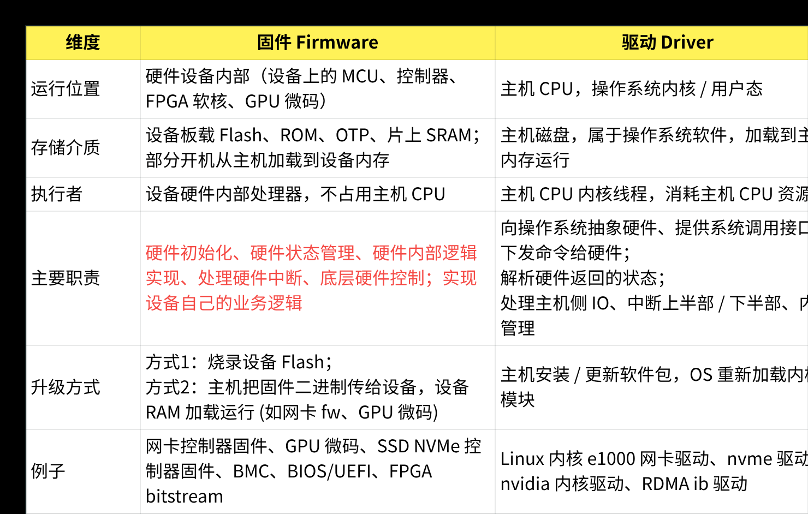
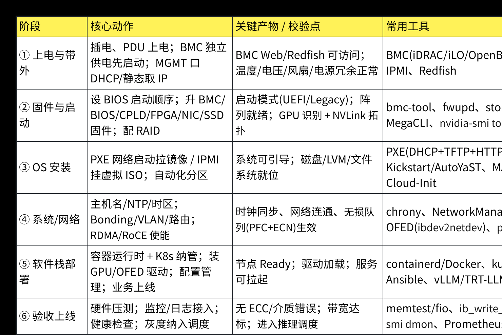
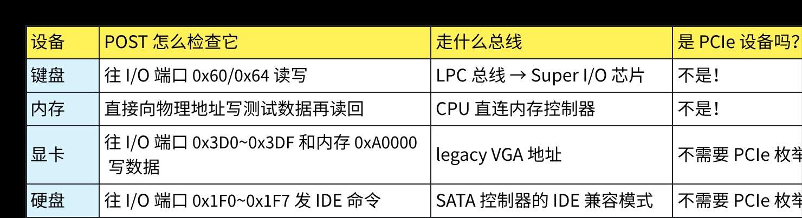
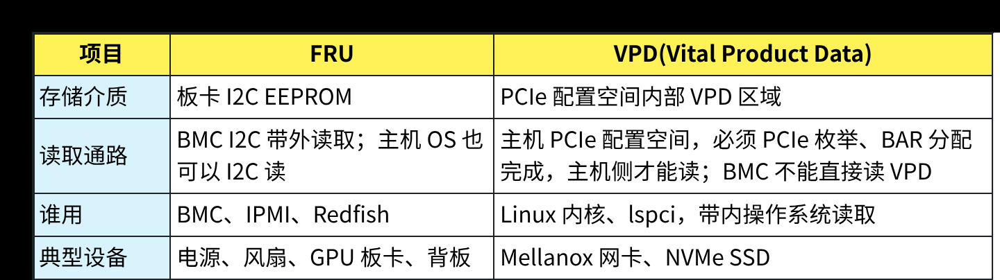
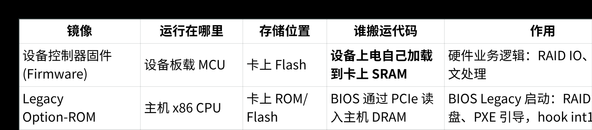
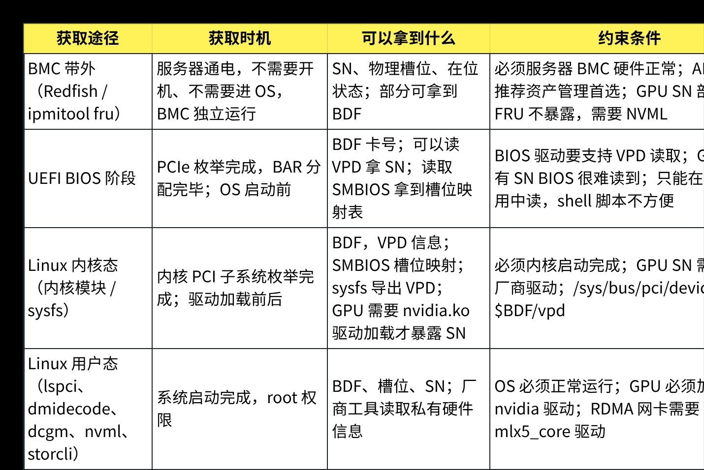

来源：PDF 学习笔记 · 共 12 页 · 提取文本 11671 字 · 提取插图 6 张
服务器基础知识学习笔记
1. 固件和驱动的概念和区别
驱动是主机操作系统上的软件，运行在主机 CPU，负责操作系统和硬件之间的桥梁，下发命令、
处理中断、向上抽象设备接口。
固件运行在设备内部控制器上，负责设备自身硬件的底层业务逻辑实现。驱动通过 PCIe 等总线和
固件交互，二者协同完成硬件功能。
固件跑在硬件设备本身；驱动跑在主机 CPU（操作系统内核）。
◦固件：设备自己的 “小操作系统 / 微码”，运行在设备板载 MCU / 硬件控制器上。
◦驱动：主机 OS 上的软件，跑在 CPU，负责和硬件对话、向 OS 暴露接口。
举生活化类比： 打印机：打印机内部主板上的小程序 = 固件；电脑 Windows 上的打印机软件 =
驱动。
1.1 固件和驱动的核心对比表
1.2 固件和驱动的分工合作（以 NVMe SSD 举例）

1. NVMe 固件（跑在 SSD 盘内部控制器）
◦SSD 上电，固件初始化 NAND 闪存、管理 SSD 内部的闪存块、垃圾回收、磨损均衡；
◦解析 PCIe 收到的 NVMe 命令；操作闪存；完成读写；产生中断通知主机。
2. NVMe 驱动（跑在主机 Linux 内核）
◦驱动操作 PCIe BAR 寄存器，向 SSD 提交 IO 命令（SQ 队列）；
◦等待 SSD 硬件中断；读取完成 CQ 队列；向上给文件系统返回读写结果；
◦对上层 OS 提供块设备 /dev/nvme0n1 。
流程简化： 应用→文件系统→NVMe 驱动 (主机 CPU) →通过 PCIe 发送 TLP→SSD 固件 (盘内控制
器)→操作 NAND。
👉 驱动不会直接操控 NAND 颗粒；NAND 的管理全部交给 SSD 内部固件完成。
1.3 关键细节和容易混淆点
1.3.1 两种固件形态
1. 固化固件：出厂烧在设备 Flash，断电不丢失，例如 BMC、BIOS。
2. 运行时加载固件 (blob)：设备没有本地 Flash，上电后主机驱动把 firmware 二进制文件
( /lib/firmware/*.bin ) 通过 PCIe 下发，加载进设备片上 RAM 运行；断电丢失。
1.3.2 驱动做什么、不做什么
✅驱动做：
•
PCIe BAR 寄存器读写、配置 DMA；
•
构造命令队列，通知硬件干活；
•
处理硬件中断，把硬件结果上报操作系统；
•
OS 抽象层，让应用不用关心硬件细节。
❌驱动不直接实现硬件内部业务逻辑。 比如网卡驱动不会做报文校验、不会做 RDMA 的 RC 协议状态
机 —— 这些是网卡固件 / 硬件控制器完成。
2. 服务器上电->业务上线的流程
服务器从到货上架到业务上线，本质是 6 个阶段、一条单向流水线：
a. 带外初始化：带外先把机器"点亮可管"，
b. 固件准备；固件把硬件"校准就绪"，
c. OS安装：装机把 OS"铺进去"，
d. 系统网络配置：配置把网络/时钟"接好"，
e. 软件栈部署：软件栈把业务"跑起来"，
f.
验收上线：验收灰度"纳管"。
2.1 第一步 硬件上电（~100ms）
这是整个流程中唯一完全由硬件主导的阶段，没有任何软件参与。
•
BMC 先行上电：电源插上后，BMC 的 ARM 核心第一个醒过来。它独立于主 CPU，开始监控传感
器、准备 KVM（做屏幕呈现） 和 IPMI/Redfish 接口（消息传递）
•
PSU 供电稳定：电源模块（PSU）逐步拉起各路电压（+12V → +5V → +3.3V → VCore），电压稳
定后发出 POWER_GOOD 信号
•
CPU 复位：收到 POWER_GOOD 后，CPU 硬件复位，程序计数器被硬连线到 0xFFFFFFF0
（x86）——这个地址映射到 BIOS/UEFI Flash ROM，CPU 的第一条指令从这里开始
2.2 第二步 BIOS固件启动（~5-15s）
从这里开始，CPU 正式执行固件代码。
•
POST开机自检：BIOS/UEFI 逐一检测CPU → 内存（逐块写读验证）→ 显卡（此时屏幕点亮）→
键盘 → 存储控制器。致命错误用蜂鸣码报错 （就是读写各个器件的固定地址）

这些 I/O 端口地址是 1981 年 IBM PC 规范固定下来的——键盘控制器永远在 0x60 ，VGA 永远在
0x3D0 ，IDE 永远在 0x1F0 。BIOS 不需要"发现"这些设备在哪，因为地址是写死的，直接往固定
端口发数据试探就行。
•
硬件初始化：扫描 PCIe 总线枚举所有设备，分配 IRQ 和 MMIO 地址；从 SPD 芯片读取内存时序；
生成 ACPI 表（告诉 OS 有哪些电源管理能力）。
PCIe 枚举要完成的四件事，POST 一件都不做：
a. 扫描总线拓扑（找PCIE设备）：遍历BDF ( Bus(0-255) × Device(0-31) ×
Function(0-7) ) 的三维空间，对每个组合读 Config Space 的 Vendor ID，如果不是
0xFFFF 就说明这个位置有设备。这是一次完整的总线普查。
b. 分配 BAR（Base Address Register）：这是最关键的一步。因为PCIe 设备有自己的寄存器和
显存（比如 GPU 的帧缓冲区），CPU 需要通过 MMIO（内存映射 I/O）来访问它们，所以要先
知道每个PCIE设备的地址空间大小。 BIOS 向设备的 BAR 寄存器写入全 1，读回确定设备需要
多大的地址空间，然后在系统地址空间中划一块给它（分配的系统地址空间最小必须等于设备
BAR声明的size）。在POST 阶段，所有设备的 BAR 都是 0——设备不知道自己被映射到哪个地
址，CPU 也无法通过常规的 MMIO 访问它们的寄存器。
c. 分配中断：为每个设备分配IRQ号或MSI-X中断向量，让设备能向 CPU 发中断。
d. 加载Option ROM：RAID 卡、网卡启动芯片等设备的固件存储在设备自己的 ROM 里。BIOS
需要先完成 BAR 分配（让设备可寻址），才能从设备 ROM 中读出代码，加载到内存并执行。
——这就是你在 POST 画面上看到的 "Press Ctrl+R to enter RAID Configuration" 那一闪而过
的画面。
•
选引导设备：按 Boot Order 依次检查硬盘、U盘、网络（PXE），找到第一个有效引导源。
•
读取引导记录：UEFI 从 ESP 分区读取 .efi 文件（或传统 BIOS 读取 MBR 512 字节扇区），
Secure Boot 验证签名后加载到内存，跳转执行
2.3 第三步 操作系统引导（~3-10s） ---BIOS->Bootloader->OS
BIOS固件先找bootloader (GRUB，保存在硬盘第一个扇区），BIOS找到后将该扇区的
bootloader加载到CPU DDR内存，然后CPU读内存进行执行，此时BIOS固件退场 → CPU执行

bootload(GRUB) 找操作系统内核 vmlinuz，找到后，加载OS内核并跳转到OS，然后Bootloader
（GRUB）退场 → OS（Linux 内核）运行
◦Bootloader（GRUB）：显示启动菜单，用户选择要启动的内核版本。GRUB 读取
/boot/grub/grub.cfg 配置，定位 vmlinuz 内核镜像和 initramfs 初始内存盘
◦加载内核：vmlinuz 被解压到内存高位，内核获得控制权，开始执行 start_kernel()
◦initramfs：这是一个临时根文件系统，包含了挂载真实根文件系统所需的存储驱动（如
megaraid_sas 、nvme ）。内核先从这里启动，加载驱动后再 pivot_root 切换到真
实的 / 文件系统
◦内核初始化：建立页表（虚拟内存）、初始化中断控制器、注册时钟、加载驱动模块，最后启
动 /sbin/init （现代 Linux 就是 systemd），PID=1
2.4 第四步 系统服务启动（~5-15s）
OS（systemd）接管，并行拉起所有系统服务。
◦systemd 启动：读取 /etc/systemd/system/default.target ，按依赖关系并行启动
所有 .service 单元。相比传统 SysV init 的串行启动，systemd 能把启动时间从几分钟压缩
到几秒
◦网络配置：配置 IP 地址（DHCP 或静态）、DNS、路由表。网络一通，SSH 服务随之就绪——
运维通道建立，之后可以远程操作了
◦容器运行时启动：containerd 或 CRI-O 作为系统服务启动，准备好 namespace 隔离、
cgroup 资源限制、overlayfs 存储驱动等容器基础设施
2.5 第5步 容器编排（~10-30s）
Kubernetes 集群接管这台服务器，将其变成集群的一个工作节点。
◦kubelet 启动：节点上的kubelet向API Server注册自己（报告 CPU、内存、可用容量），成为
集群的 Ready 节点
◦配置注入：从etcd拉取该节点需要挂载的 Secret（密钥）、ConfigMap（配置文件）、
PersistentVolume（持久存储）
◦Pod 调度：Scheduler根据资源请求、亲和性规则、污点容忍等策略，决定哪些Pod调度到这
个节点。
◦集群网络就绪：kube-proxy配置iptables/IPVS 负载均衡规则，CNI 插件（Calico/Flannel）为
每个 Pod 分配 Cluster IP，集群内网络互通。
2.6 第6步 业务部署（~30-120s）
实际的应用容器在这一阶段拉起并对外服务。
◦拉取镜像：kubelet 指示 containerd 从镜像仓库（Harbor/ACR/Docker Hub）拉取应用镜像
到本地
◦启动容器：创建 namespace、cgroup、overlayfs 挂载，容器进程启动
◦就绪探针（Readiness Probe）：Kubernetes 反复探测容器是否准备好接收流量（HTTP 200
或 TCP 连接成功）。探针通过前，Pod 状态是 NotReady ，不会被接入流量
◦流量接入：就绪后，Endpoint Controller 将 Pod IP 加入 Service 的端点列表，Ingress/LB 开
始把外部请求路由到这个 Pod
◦业务上线：服务对外可用，进入持续运维阶段——Prometheus 采集指标、日志收集器采集日
志、HPA 根据负载自动扩缩容
3. FAQ
1. 设备自己的工作固件（Firmware）：RAID 卡 / 网卡板载 MCU 运行，存卡上 Flash/ROM，在卡内
部执行，不需要 BIOS 拷贝到主机内存，负责硬件控制器工作。
2. Option ROM（选项 ROM，Boot ROM，PXE 启动 ROM、RAID Option ROM）：这不是设备控制器
的工作固件！这是一段 x86 机器码，专门给 BIOS/UEFI 执行，跑在主机 CPU 上，用来做 BIOS 阶
段的设备初始化、引导启动。
核心一句话： Option ROM 里面的代码不是跑在 RAID 卡 / 网卡的 CPU 上，是跑在主机 x86 CPU
上。所以 BIOS 必须把 ROM 里的二进制拷贝到主机系统内存，然后主机 CPU 去执行它。
3.1 FRU知识
FRU（Field Replaceable Unit）是现场可更换单元。FRU 是服务器硬件资产管理标准，指可以
在机房现场直接更换的硬件部件，同时也指该部件上存储的 FRU 信息（FRU‑EEPROM）。IPMI、
Redfish 标准都定义 FRU 数据格式。
FRU = 可更换单板 + 板卡上烧录那一块存放资产信息的 EEPROM 芯片。
FRU包括电源、风扇、GPU 板卡、背板。
3.1.1 FRU 里面存什么（标准 FRU 字段）
FRU信息存放在板卡自带的 I2C EEPROM，BMC 通过板卡侧I2C总线读取，服务器不开机，只要待
机5VSB上电就可以读。 标准FRU存的字段包括： 制造商名称（Manufacturer）、部件 PN 料号
（Part Number）、序列号 SN（Serial Number）、版本号、生产日期、设备类型、设备描述
a. FRU部件：GPU 板卡、网卡、RAID 卡、电源、风扇，这些都是 FRU 部件，可以现场更换。
b. FRU 数据 (FRU‑EEPROM)：板卡上的小存储芯片，把上面资产信息烧进去。
3.1.2 FRU 和 VPD 的区别（经常混淆，AI 服务器重点）
3.2 为什么PCIE设备的Option ROM在BIOS执行
RAID 卡、网卡 PXE 芯片，卡上带一小块 ROM（Flash），存放 Option ROM 镜像。 这段代码是x86 实
模式汇编程序，不是给板载控制器跑的。
3.2.1 时间线顺序（Legacy BIOS 流程）
a. BIOS PCI 枚举，探测 RAID 卡 PCIe 设备； --------------BIOS找PCIE设备
b. BIOS 做BAR 分配：分配 MMIO 地址空间，写 BAR 寄存器，现在主机可以通过 PCIe 访问该设
备的寄存器，同时也能访问这个设备上的 Option‑ROM 空间（PCI 配置空间有寄存器标记
Option ROM 的 BAR 基址）；（如果 BAR 还没分配，PCI 设备的 ROM 窗口是不可寻址的，
BIOS 读不到 ROM 里面的二进制。）
------------BIOS给PCIE设备分配一块寻址空间
c. BIOS 通过 PCIe 总线，把设备板载 ROM 中的 Option ROM 二进制读到主机 DRAM 内存； ----
BIOS把ROM读到CPU DDR RAM内存
d. 主机的 x86 CPU 跳转到这块主机内存，执行这段 Option ROM 代码。 -------CPU执行这一段
代码
3.2.2 Option ROM 代码干什么（主机 CPU 执行）
◦RAID 卡 Option ROM：在 BIOS 阶段，初始化 RAID 卡，扫描 RAID 阵列，向 BIOS 提供虚拟磁
盘，让 BIOS 可以识别 RAID 磁盘作为启动设备；
◦网卡 PXE Option ROM：BIOS 阶段实现 PXE 网络协议，DHCP、TFTP，从网络拉取操作系统
引导镜像。️
注意：RAID 卡本身的控制器固件，依然在 RAID 卡自己板载 MCU 上运行，这是两码事。
Option ROM 只是BIOS 启动阶段的代理小程序，跑主机 CPU；真正 RAID IO 处理是卡上固件完
成。
◦形象拆分 RAID 卡

▪RAID 卡板载 Flash A：RAID 控制器固件 → 加载到卡上 MCU 执行，管理磁盘阵列，处理
IO。
▪RAID 卡板载 Flash B（Option ROM）：x86 引导时代码 → BIOS 通过 PCIe 读出来，拷贝到
主机内存，主机 CPU 跑，只负责 BIOS 启动阶段。
很多卡物理上是同一个 Flash 芯片，分区存放两份镜像，但逻辑上是两套完全不同用途代码。
3.2.3 为什么不能让设备自己跑 Option ROM，直接给 BIOS 返回结果？
a. Legacy BIOS 没有设备之间高级通信接口。BIOS是主机x86固件，它只认识主机CPU执行的代
码。 BIOS的启动设备列表、磁盘中断服务（int13）是主机BIOS的x86中断服务。RAID卡控制
器是独立的小MCU，它无法直接hook x86 BIOS 的int13中断。 只有主机CPU运行
Option‑ROM 代码，才可以拦截、修改BIOS 的int13中断向量，把对虚拟RAID磁盘的 BIOS 磁
盘请求转发给 RAID 卡寄存器。
b. Option ROM 要复用BIOS的主机内存、BIOS 的中断服务。它要调用 BIOS 提供的底层服务，只
能在主机 CPU上下文执行。 设备板载MCU是另一个独立处理器，它没有权限修改主机 BIOS 中
断向量表。
c. Option ROM只在BIOS启动阶段短暂生效。操作系统接管之后，这段代码就被丢弃，不再使
用。真正业务 IO 交给 OS 驱动 + 卡上控制器固件。
3.2.4 UEFI 下的对应概念：UEFI Option ROM (EFI Driver)
UEFI 时代，Option ROM 变成 EFI 驱动。 同样逻辑：设备 ROM 中存放 EFI 驱动二进制，UEFI
BIOS 把它读到主机内存，主机 CPU 执行 EFI 驱动，在 UEFI 环境下枚举 RAID 磁盘、PXE 网络。
UEFI 驱动不是跑在网卡 / RAID 卡内部，依然跑主机 CPU。
3.2.5 容易混淆的对比表格
3.2.6 为什么必须先分配 BAR，才能读取 Option ROM？
PCI 设备的 Option ROM 本身，也是映射到 PCI 地址空间的窗口。PCI 配置空间有 Expansion
ROM Base Address 寄存器。 和 BAR 机制一样，只有 BIOS 完成PCI 枚举，分配地址之后，主机
CPU才可以通过PCIe RC去访问设备 ROM 空间。BAR 没分配前，设备整个地址窗口不可访问，BIOS
读不到 ROM 里 Option ROM 二进制。
3.2.7 经典时序梳理（完整）

1. 上电后，RAID卡硬件复位，RAID卡自己加载控制器固件到卡上的MCU运行，控制器已经活了，但
此时主机 BIOS还看不见它的逻辑磁盘。
2. BIOS PCI 枚举，分配 BAR，设备所有 MMIO/ROM 窗口可被主机寻址。
3. BIOS 读取设备 Option ROM，拷贝二进制到主机内存。
4. 主机CPU执行Option ROM 代码：操作RAID卡 BAR 寄存器，和卡上固件交互，创建 BIOS 可见虚拟
RAID 磁盘，注册 int13 钩子。
5. BIOS从RAID 虚拟盘引导操作系统。
6. OS 启动，OS RAID 驱动接管，Option‑ROM 代码被丢弃；后续 IO 由 OS 驱动 (主机 CPU) ↔
RAID 卡固件 (卡 MCU) 协同处理。
关键点：RAID 卡控制器固件从卡上电就已经在跑；但是 BIOS 不知道 RAID 阵列，必须靠主机 CPU
跑 Option ROM去和卡固件对话，把阵列暴露给 BIOS。
3.2.8 总结
Option ROM 并不是 RAID / 网卡控制器的工作固件。它是一段给主机 CPU 执行的启动时代码，
用来在 BIOS 阶段和设备固件交互、实现 PXE/RAID 引导。既然跑在主机 CPU，BIOS 就必须把设备
ROM 中的二进制拷贝到主机内存，CPU 才能取指执行；并且读取 ROM 本身依赖 PCIe BAR 分配完
成。 而设备真正干活的控制器固件，是设备自己板载 MCU 加载运行，不需要 BIOS 拷贝到主机内存。
3.3 AI服务器中获取设备SN号，设备槽位号，GPU卡ID可以通过什么方
式？
3.3.1 获取卡BDF（bus-device-function）的方式
卡号 BDF：PCIe 域:bus:dev.func（0000:3c:00.0 ），PCIe 枚举出来的逻辑地址；
卡号BDF格式：Segment:Bus:Device.Function
BDF 是 PCIe 标准枚举得到，没有存储在板卡 Flash，是 PCIe RC 分配出来的逻辑编号。在如下两
个阶段可以读出BDF。
◦BIOS/UEFI 阶段：PCIe 枚举完成（BAR 分配之后），UEFI 可以读出 BDF；
◦内核阶段：内核 PCI 子系统扫描 PCI 总线得到 BDF；/sys/bus/pci/devices/<BDF>/ ，
lspci -D ；
3.3.2 获取设备SN号的方式
板卡 SN：板卡硬件序列号，烧录在板卡 EEPROM/VPD/FRU。
有两大大类通路：带外 (BMC)、带内 (BIOS/UEFI、Linux 内核用户态)。
3.3.3 获取物理槽位号（机箱物理 Slot 编号）
物理槽位号：机箱上丝印物理 Slot 编号（Slot1 / Slot2，机箱面板标签），槽位号来源有两个：
a. SMBIOS(DMI Type9)：BIOS 在 PCI 枚举后，把主板RootPort 与机箱物理 Slot 的映射写到
SMBIOS 表中，操作系统通过dmidecode 读取 Type9，拿到Designation(Slot名称) 、
Bus Address(RootPort BDF) ，再把设备BDF向上追溯 RootPort，匹配出物理槽位号。
示例：dmidecode -t slot 输出 Designation: PCIe Slot 3 ，Bus
Address:0000:00:1c.0 。
b. BMC FRU/Redfish： BMC 独立扫描背板 I2C/IPMB，直接读到物理槽位与板卡 FRU，可靠性
最高，不受 OS 影响，服务器关机也可读。
备注：SMBIOS 槽位映射依赖 BIOS 厂商实现；部分 OEM 服务器 SMBIOS 映射不准；此时优先
使用 BMC Redfish。
3.3.3 板卡 SN 序列号
SN 存储位置分两类：
a. PCIe VPD（Vital Product Data）：板卡 EEPROM，PCI 配置空间 VPD 区域，标准 PCIe 硬件存
放 PN、SN；Mellanox 网卡、NVMe 大量使用；
b. FRU信息：板卡 I2C FRU，BMC 通过 I2C 读取板卡 FRU，BMC 带外获取 SN；
c. 厂商私有 EEPROM：NVIDIA GPU，NVML/DCGM 读取板卡 EEPROM 拿到 PSN 物理 SN；原生
PCIe VPD 读不到 GPU SN。
⚠️ PCI 配置空间 VPD 读取前提：BAR 已经分配，PCIe 设备可寻址。没有完成 BAR 分配，
BIOS/UEFI 无法读取 VPD 内容。
3.3.4 获取设备槽位号的方式
3.3.5 获取GPU卡ID的方式
通常nvidia‑ko 会生成GPUID，但是nvidia-ko内核驱动生成GPU ID (0‑7)的时机太晚，要等到内
核模块加载。 所以希望在BIOS POST 阶段 PCI 枚举拿到 BDF，按 nvidia.ko 完全一样排序规则算
出一套 0‑7 编号，写入 CPLD；这样在没有 Linux 内核、nvidia 驱动还没跑起来的场景（BMC 诊
断、UEFI shell、initramfs 早期），就可以拿到这套逻辑编号。
该方案可以执行，但需要分清写到 CPLD 里面的，是BIOS 预计算的 GPU 逻辑索引，不是
nvidia‑smi 原生的 GPU ID，和Nvidia-smi生成的GPU ID，两者不一定相等。
a. BMC / UEFI Shell /initramfs 早期，你可以读 CPLD 拿到这个预生成编号，用于固件侧诊断、故
障上报、资产管理。
b. 原生 nvidia.ko 完全不会读取 CPLD；Linux 跑起来后 nvidia 驱动依然会自己扫描 PCI、重新
生成属于驱动内部的 GPU‑ID。
3.3.5.1 设计方案完整实现流程（OEM 整机定制方案）
i.
BIOS 遍历 PCI 总线，过滤 VID=0x10de 设备，拿到全部 GPU 的 BDF；
ii. 严格复刻 nvidia.ko 排序逻辑：Segment → Bus → Device → Function 升序；
iii. 生成映射表：{BDF, BIOS_GPU_INDEX(0~7)} ；
iv. BIOS 通过 PCH SMBus/I2C 把这张表写入主板 CPLD 非易失寄存器；
CPLD 寄存器断电保持；冷开机才会被 BIOS 重新刷新；热插拔 GPU 不会自动更新。
3.3.5.2 关键风险点（做这个方案必须考虑）
i.
BDF不一致风险: BIOS枚举得到BDF，和 Linux 内核 PCI 子系统重扫描后的 BDF 有可能不
同。 →缓解：BIOS 打开静态 PCI Bus Number Assignment，禁止内核动态重分配 Bus。
ii. GPU热插拔场景失效 运行时热插拔 GPU，BIOS 不会重新运行 POST，CPLD 内的映射不
会自动刷新，里面的索引是旧的、错误的。（本方案只适合冷插拔，AI服务器一般不支持
GPU卡热插拔，这点可以接受）
iii. 两套编号容易混淆（运维最大坑） 日志里会出现两套 GPU 编号：
•
BMC 日志：BIOS_GPU_ID=2 （来自 CPLD）
•
nvidia‑smi：GPU‑5 （nvidia.ko 生成） 运维人员很容易把两者混为一谈，导致故障定
位错误。
工程上必须在所有接口、日志明确区分字段名：BiosGpuIndex vs NvidiaGpuId ，
不能都叫 GPU ID。
iv. CPLD 读出的BiosGpuIndex 不能直接用于CUDA_VISIBLE_DEVICES ：业务层必须
做翻译：CPLD读出(BDF→BiosGpuIndex) ↔ OS内nvidia NVML查询
(BDF→NvidiaGpuId) 。
3.3.5.3 使用CPLD里面的GPUid的场景
1. BMC侧（服务器待机、OS 未启动）BMC I2C/SMBus读同一个 CPLD，拿到BDF ↔
BIOS_GPU_INDEX 。 用途：BMC 告警、故障日志、Redfish 上报，报告 “BIOS 侧
GPU‑2 报错”，方便机房定位硬件。 （这里的 GPU‑2 是 BIOS 预生成索引，不等于
nvidia‑smi 看到的 GPU‑2）
2. UEFI Shell / UEFI 诊断工具 UEFI 应用通过 SMBus 读 CPLD，拿到索引，做早期硬件诊
断。
3. Linux initramfs 早期（nvidia.ko 还未加载） 写一个轻量 OEM 小内核模块，
I2C/SMBus 读取 CPLD 映射，导出到/sys/oem/gpu_map ； 此时还没
有/dev/nvidia* ，没有 nvidia‑smi，但你已经有一套固件侧的 0‑7 编号。
4. Linux 完全启动，nvidia.ko 加载完成 nvidia 驱动独立扫描 PCI，生成自己的 GPU‑ID。
◦如果 BIOS 开启静态 PCI Bus 分配，BIOS 看到的 BDF 与内核 PCI 子系统看到 BDF 完
全一致：BIOS_GPU_INDEX 和 nvidia 驱动 GPU‑ID 刚好相等，只是巧合。
◦如果内核 PCI 子系统修改 Bus 编号（极少数场景），两者编号错位。
重点：驱动不会同步 CPLD，不会参考 CPLD；相等只是 BDF 一致带来的副作用，
不是契约保证。
3.3.6 4种获取通路对比
BDF、VPD 读取，必须 PCIe 枚举完成，BAR 分配完成；BAR 没分配，PCI 配置空间只能访问
0~0xFF 配置头，VPD/MMIO 窗口不可访问。
